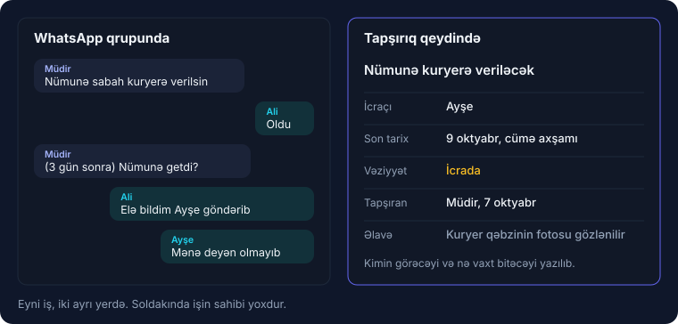
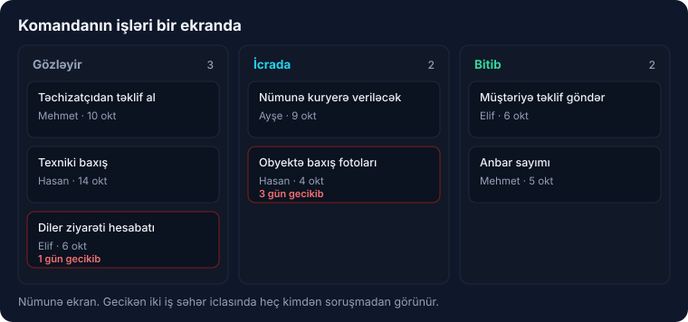

İşlər niyə nəzarətsiz qalır? Tapşırıqların idarə edilməsi proqramı nə işə yarayır
Şirkətdə işlərin çoxu şifahi verilir. Dəhlizdə deyilir, telefonda xahiş edilir, WhatsApp qrupuna yazılır. Verilən işlərin bir hissəsi görülür, bir hissəsi unudulur, bir hissəsi üçün isə üç gün sonra "o iş nə oldu?" deyə soruşulur. Bu yazı işlərin niyə nəzarətsiz qaldığını və tapşırıqların idarə edilməsi proqramının buna necə çarə olduğunu izah edir.

İş harada itir?
WhatsApp qrupu iş tapşırmaq üçün rahat görünür, çünki hamı oradadır. Amma qrupa gündə yüz mesaj gəlir. Səhər yazılan "bu nümunəni kuryerə verək" mesajı günortaya qədər ekranın çox yuxarısında qalır. Mesajı görən üç nəfərin hər biri o birinin məşğul olduğunu düşünür.
Şifahi verilən işdə vəziyyət daha da qeyri-müəyyəndir. İşi tapşıran dediyini xatırlayır. İşi alan nə vaxta qədər istənildiyini xatırlamır və ya heç eşitməyib. Hər ikisinin haqlı olduğu mübahisə yaranır və kimin nə dediyi müzakirə ediləndə iş hələ də görülməyib.

Bunun əksi də olur: eyni işi iki nəfər birdən görür. Müştəriyə iki ayrı təklif gedir, təchizatçıya iki dəfə zəng edilir. Kənardan baxan dağınıq bir şirkət görür.
Rəhbərin günü soruşmaqla keçir
İşlər bir yerdə yazılı olmayanda nəzarət rəhbərin yaddaşına qalır. Səhər ilk iş hamıdan bir-bir soruşur: təklif getdi, maşın texniki baxışa aparıldı, tikinti sahəsindən fotolar gəldi? Günün xeyli hissəsi belə keçir.
Bu qaydanın bir əlavə təsiri də var. Rəhbər soruşmağı unudanda iş də unudulur. Komanda zamanla öyrənir ki, soruşulmayan iş təcili deyil.
Kimsə işdən çıxanda və ya illik məzuniyyətə gedəndə də eyni boşluq yaranır. Onun üzərində hansı işlərin olduğu yalnız öz telefonunda və öz yaddaşındadır. Onu əvəz edən adam sıfırdan başlayır, müştəriyə verilən sözlər arada itib-batır.
Tapşırıqların idarə edilməsi proqramı nəyi dəyişir?
Gördüyü iş sadədir: hər işi bir qeydə çevirir. Qeyddə dörd şey olur: iş nədir, kim görəcək, nə vaxta qədər, indi hansı vəziyyətdədir. Bu dörd məlumat yazılı olanda yuxarıdakı problemlərin çoxu öz-özünə aradan qalxır.
İşi alan adam telefonunda öz siyahısını görür. Bu gün nə etməli olduğu, hansı işin gecikdiyi bəllidir. İşi bitirəndə qeyd edir, lazımdırsa foto və ya sənəd əlavə edir.
İşi tapşıran soruşmağa məcbur olmur. Ekranı açır və kimdə nə var, hansı bitib, hansı gecikib, görür. Səhər iclası qısalır, yalnız ilişən işlər müzakirə olunur.

Təkrarlanan işlər də bura daxildir. Aylıq inventarizasiya, həftəlik diler ziyarəti, avtomobilin texniki baxışı, müqavilənin yenilənməsi kimi işlər bir dəfə təyin edilir və günü çatanda aidiyyəti adamın siyahısına özü düşür. Bunları yadda saxlamaq artıq heç kimin vəzifəsi olmur.
Sahədə işləyən komandalar üçün
Servis, quraşdırma, səyyar satış kimi işlərdə komanda günün çoxunu ofisdən kənarda keçirir. Səhər şifahi paylanan işlərin axşama nə qədərinin görüldüyünü bilmək üçün hamının qayıtmasını gözləyirsiniz.
Tapşırıqlar telefona gələndə sahə komandası növbəti işi, ünvanı və müştəri qeydini özü ilə gəzdirir. İşi bitirəndə fotosunu çəkir, lazımdırsa müştəriyə imza atdırır. Ofis bunu dərhal görür. Müştəri zəng edəndə "komandamız yarım saat əvvəl çıxdı, iş tamamlanıb" deyə bilirsiniz.
Komanda bunu nəzarət kimi qəbul edəcəkmi?
İlk reaksiya çox vaxt belə olur və buna ciddi yanaşmaq lazımdır. Sistemdən yalnız kimin gecikdiyini görmək üçün istifadə etsəniz, komanda tezliklə işi sadəcə "bitdi" kimi qeyd edib keçməyin yolunu tapacaq.
İşə yarayan yanaşma budur: sistem əvvəlcə işçinin öz işini asanlaşdırmalıdır. Öz işlərini bir siyahıda görmək, "mənə deyilməyib" mübahisəsindən qurtulmaq, məzuniyyətə gedərkən işlərini səliqə ilə təhvil vermək işçi üçün də rahatlıqdır. Biz quraşdırmalarda ilk həftə yalnız bunu hədəfləyirik. Hesabatlar və gecikmələrə nəzarət sonra gəlir.
Necə başlamalı?
Bir komanda və bir qayda ilə başlayın: iş sistemə yazılıbsa, verilmiş sayılır. Şifahi deyilən və ya qrupa yazılan iş də sonradan sistemə daxil edilir. Bu qayda iki həftə davam gətirsə, qalanı asandır.
Əvvəlcə kateqoriya, prioritet, etiket kimi təfərrüatlarla məşğul olmayın. İş, adam və tarix kifayətdir. Komanda öyrəşdikcə ehtiyac duyduğunuz sahələri əlavə edərsiniz.
Alət seçimi boldur. Yalnız tapşırıq izləyən yüngül tətbiqlər də var, müştəri və təklif qeydləri ilə birlikdə işləyən sistemlər də. Tapşırıqlarınız müştəriyə, sifarişə və ya layihəyə bağlıdırsa, ikinci növə baxmaq lazımdır (bax: CRM ilə tapşırıq idarəetməsi nədir?). Əks halda eyni məlumatı iki ayrı yerə yazırsınız.
Tez-tez verilən suallar
WhatsApp-dan tamamilə imtina etmək lazımdır?
Xeyr. Yazışma üçün istifadə etməyə davam edə bilərsiniz. Dəyişən tək şey budur: işin özü mesajda qalmır, qeydə alınır.
On nəfərlik şirkət üçün artıq olmazmı?
On nəfər gündə otuz-qırx ayrı iş deməkdir. Bir adamın hamısını yadında saxlaması onsuz da mümkün deyil. Bu miqyasda sadə bir alət artıqlaması ilə kifayət edir.
Komanda istifadə etməsə nə olacaq?
Rəhbər istifadə etmirsə, komanda da etmir. İşlər sistemdən verilirsə və vəziyyəti sistemdən izlənirsə, bir neçə həftəyə vərdiş yaranır.
Əlaqəli xidmətlərimiz: tapşırıqların idarə edilməsi və səyyar komanda tətbiqi, rəqəmsal transformasiya məsləhəti.
Tapşırıq izləmə şablonu
Kim, hansı iş, nə vaxta qədər; gecikən iş qırmızı, hər işçi üzrə xülasə. Pulsuz Excel şablonu.
Şablonlara baxKomandanızın işlərini görünən edək
İşlərin bu gün necə verildiyini və izlənildiyini birlikdə aydınlaşdıraq.
Layihənizi müzakirə edək